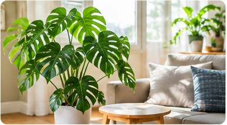
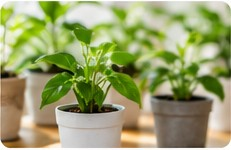
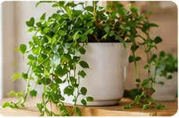
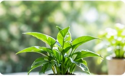

水やり
土の表面が乾いてから、鉢底から流れるくらいたっぷり水をあげます。

観葉植物は、部屋に緑を添えるだけでなく、毎日の暮らしにほっとする時間を届けてくれます。
葉の形や色を眺めたり、新しい芽が出るのを見守ったり。植物を育てることは、私の大切な楽しみのひとつです。
植物との暮らしを楽しむ ›毎日少し気にかけるだけで、植物は元気に育ってくれます。
土の表面が乾いてから、鉢底から流れるくらいたっぷり水をあげます。

植物の種類に合わせて、明るく風通しのよい場所を選びましょう。

葉のほこりをやさしく拭くと、見た目もすっきりします。
少しずつ増えていく、我が家の植物たち。

このページを見てくださってありがとうございます。